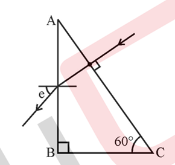

Here, you will find past 10 years papers with solutions, chapter-wise, year-wise, and mark-wise. We will also show the number of times each question has been repeated to help you prioritize your study topics accordingly. Use the table of contents below to navigate to your desired chapter.
Chapter 1: Electric Charges And Fields
Topic 1: Electric Charges
1 Marks Questions
Solution-
Topic 2: Conductors and Insulators
Ttopic 3: Charging by Induction
Topic 4: Basic Properties of Electric Charge
1 Marks Questions
Q1- Does the charge given to a metallic sphere depend on whether it is hollow or solid? Give reason for your answer. (Delhi Scheme - 2017 Set-1)(Delhi Scheme - 2017 Set-2)(Delhi Scheme - 2017 Set-3)
Solution- The charge given to a metallic sphere does not depend on whether it is hollow or solid. This is because the charge resides on the surface of the conductor due to electrostatic repulsion, and it distributes itself uniformly over the surface regardless of the internal structure of the sphere.
Topic 5: Coulomb’s Law
1 Marks Questions
Q1- What is one ampere of current, using the concept of force between two infinitely long parallel current-carrying conductors?(Outside Delhi Scheme Set-1, 2014)
Solution- The unit of current that determines whether two parallel, uniform, long linear conductors placed one metre apart in free space will attract or repel one another with a force of 2107 N per metre of length is one ampere.
Topic 6: Forces between Multiple Charges
2 Marks Questions
Q1- Four point charges Q, q, Q and q are placed at the corners of a square of side ‘a’ as shown in the figure.
Find the
(a) resultant electric force on a charge Q, and
(b) potential energy of this system.(55-1 2018-Set-1)(55-1 2018-Set-2)(55-1 2018-Set-3)
Solution- Click here for detailed solution.
Topic 7: Electric Field
1 Marks Questions
Q1- To which part of the electromagnetic spectrum does a wave of frequency 5 × 10^19 Hz belong?(Outside Delhi Scheme Set-1, 2014)
Solution- A wave of frequency 5×1019 Hz lies in the gamma region of the electromagnetic spectrum.
2 Marks Questions
Q1- (a) Three point charges q, -4q, and 2q are placed at the vertices of an equilateral triangle ABC of side ‘l’ as shown in the figure. Obtain the expression for the magnitude of the resultant electric force acting on the charge q.
(b) Find out the amount of work done to separate the charges at infinite distance.(55-1 2018 Set-1)(55-2 2018 Set-2)(55-3 2018 Set-1)
Solution- (a)
(b)
Potential energy of the system U = Uq,2q+Uq,-4q+U2q,-4q
U=(kq(2q)/l)+(kq(-4q)/l)+(k2q(-4q)/l)=-10kq2/l
3 Marks Questions
Q1- A charge is distributed uniformly over a ring of radius ‘a’. Obtain an expression for the electric intensity E at a point on the axis of the ring. Hence show that for points at large distances from the ring, it behaves like a point charge. (Delhi Scheme-2016 Set-2)(Delhi Scheme-2016 Set-3)
Solution- Click her for detailed solution
Topic 8: Electric Field Lines
1Marks Questions
Q1- Why do the electrostatic field lines not form closed loops?(Outside Delhi Scheme Set-2, 2014)
Solution- The positive charge is where the electrostatic field lines begin, and they terminate at the negative charge. The electrostatic field lines do not form closed loops because there is an isolated positive and negative charge present. They can never start and finish at the same location.
Q2- Why do the electric field lines never cross each other ?(Outside Delhi Scheme 2014 Set-3)
Solution- Electric lines of force never intersect each other because at the point of intersection, two tangents can be drawn to the two lines of force. This means two direction of electric field at the point of intersection, which is not possible.
Q3- Draw the pattern of electric field lines, when a point charge – Q is kept near an uncharged conducting plate.(55-1-1 2019)(55-1-2 2019)(55-1-3 2019)
Solution-
5 Marks Questions
Q1- a) Use Gauss’ law to derive the expression for the electric field (E) due to a straight uniformly charged infinite line of charge density λ C/m.
(b) Draw a graph to show the variation of E with perpendicular distance r from the line of charge.
(c) Find the work done in bringing a charge q from perpendicular distance r1 to r2 (r2 > r1). (55-1 2018 Set-1)(55-2 2018 Set-2)(55-3 2018 Set-3)
Solution- Click here for detailed solution.
Topic 9: Electric Flux
5 Marks Questions
Q1- (a) Explain, using suitable diagrams, the difference in the behavior of a (i) conductor and (ii) dielectric in the presence of an external electric field. Define the terms polarization of a dielectric and write its relation with susceptibility.
(b) A thin metallic spherical shell of radius R carries a charge Q on its surface. A point charge Q/2 is placed at its center C and another charge +2Q is placed outside the shell at a distance x from the center as shown in the figure. Find (i) the force on the charge at the center of the shell and at the point A, (ii) the electric flux through the shell.(Outside Delhi Scheme-2015 Set-1,2,3)
Solution- (a)
(i) When an electric field is present, the conductor's free charge carriers shift the charge distribution and cause it to self-adjust, resulting in a zero net electric field inside the conductor.
(ii) By stretching or reorienting the molecules in a dielectric, the external electric field creates a net dipole moment. The induced dipole moment causes the electric field to oppose the external electric field, albeit not completely cancel it out.
Polarisation: The polarisation is the induced dipole moment per unit volume. P = Xc E holds for linear isotropic dielectrics with susceptibility Xc.
Topic 10: Electric Dipole
3 Marks Questions
Q1- (i) Derive the expression for electric field at a point on the equatorial line of an electric dipole.
(ii) Depict the orientation of the dipole in (i) stable, (ii) unstable equilibrium in a uniform electric field.(Delhi Scheme-2017 Set-1)(Delhi Scheme-2017 Set-2)(Delhi Scheme-2017 Set-3)
Solution- Click here for detailed solution
Q2- The question "An electric dipole consisting of charges +q and –q separated by a distance L is in stable equilibrium in a uniform electric field →E. The electrostatic potential energy of the dipole is
(A) qLE
(B) zero
(C) -qLE
(D) -2qEL (55/1/1 2020)(55/1/2 2020)(55/1/3 2020)
Solution- (B) zero
5 Marks Questions
Q1- (a) An electric dipole of dipole moment p↑ consists of point charges + q and -q separated by a distance 2a apart. Deduce the expression for the electric field due to the dipole at a distance x from the centre of the dipole on its axial line in terms of the dipole moment p↑.Hence show that in the limit (b) Given the electric field in the region E↑= 2xi^, find the net electric flux through the cube and the charge enclosed by it.(Outside Delhi Scheme-2015 Set-1,2,3)
Solution- Click her for solution.
Q2- (a) Derive an expression for the electric field at any point on the equatorial line of an electric dipole.
(b) Two identical point charges, q each, are kept 2m apart in air. A third point charge Q of unknown magnitude and sign is placed on the line joining the charges such that the system remains in equilibrium. Find the position and nature of Q.(55-1-1 2019)(55-1-2 2019)(55-1-3 2019)
Solution-
Topic 11: Dipole in a Uniform External Field
Topic 12: Continuous Charge Distribution
Topic 13: Gauss’s Law And Its Applications
1 Marks Questions
Q1- What is the electric flux through a cube of side 1 cm which encloses an electric dipole ?(Outside Delhi Scheme-2015 Set-1,2,3)
Solution- It is possible to argue that the net flux through the cube is zero since, in accordance with Gauss Law, the net charge enclosed in the surfaces bound by the cube is zero (the dipole is made up of equal and opposite charges).
Q2- How does the electric flux due to a point charge enclosed by a spherical Gaussian surface get affected when its radius is increased ?(Delhi Scheme-2016 Set-2)(Delhi Scheme-2016 Set-3)
Solution- Electric Flux, ϕ=qenclosed/ϵ0 Due to the fact that the positive and negative charges in an electric dipole are equally spaced apart. A dipole has zero net charge as a result.Therefore, electric flux is also zero.
Q3- If the net electric flux through a closed surface is zero, then we can infer
(A) no net charge is enclosed by the surface.
(B) uniform electric field exists within the surface.
(C) electric potential varies from point to point inside the surface.
(D) charge is present inside the surface. (55/1/1 2020)(55/1/2 2020)(55/1/3 2020)
Solution- (A) no net charge is enclosed by the surface.
5 Marks Questions
Q1- (a) Define electric flux. Is it a scalar or a vector quantity ? A point charge q is at a distance of d/2 directly above the centre of a square of side d, as shown in the figure. Use Gauss’ law to obtain the expression for the electric flux through the square
(b) If the point charge is now moved to a distance ‘d’ from the centre of the square and the side of the square is doubled, explain how the electric flux will be affected.(55-1 2018 Set 1)(55-2 2018 Set 2)(55-3 2018 Set 3)
Solution- (a)
(b)
Electric flux stays the same if the charge is now moved to a distance of d from the square's centre and the square's side is doubled. This is because electric flux depends only on the amount of charge and not on the square's side OR position of the charge.
Chapter 2: Electrostatic Potential And Capacitance
Topic 1: Electrostatic Potential
Topic 2: Potential due to a Point Charge
1 Marks Questions
Q1- A point charge +Q is placed at point O as shown in the figure. Is the potential difference VA–VB positive, negative or zero?(Delhi Scheme-2016 Set-2)(Delhi Scheme-2016 Set-3)
Solution- We know that, V=Q/4πε0r V∝1/r The potential due to a point charge decreases with increase of distance. VA-VB>0->VA-VB Hence, the charge Q is positive.
3 Marks Questions
Q1- (a) Draw the equipotential surfaces corresponding to a uniform electric field in the z-direction.
(b) Derive an expression for the electric potential at any point along the axial line of an electric dipole.(55-1-1 2019)(55-1-2 2019)(55-1-3 2019)
Solution- (a)
(b)
Topic 3: Potential due to an Electric Dipole
Topic 4: Potential due to a System of Charges
Topic 5: Equipotential Surfaces
Topic 6: Potential Energy of a System of Charges
Topic 7: Potential Energy in an External Field
Topic 8: Electrostatics of Conductors
Topic 9: Dielectrics and Polarisation
2 Marks Questions
Q1- The space between the plates of a parallel plate capacitor is completely filled in two ways. In the first case, it is filled with a slab of dielectric constant K. In the second case, it is filled with two slabs of equal thickness and dielectric constants K1 and K2 respectively as shown in the figure. The capacitance of the capacitor is same in the two cases. Obtain the relationship between K, K1 and K2.(55/1/1 2020)(55/1/2 2020)(55/1/3 2020)
Solution- The capacitance of the capacitor filled with a dielectric slab (K) is given by:
C=Kε0A/d
where, A is the area of the plate, K is the dielectric constant, d is the thickness of the plate.
When the capacitor is filled with two slabs of equal thickness, the capacitance is as follows:
C=(2ε0A/d)((K1K2)/(K1)+K2)
Area of the plates remain same and thickness of each slab is d/2.
It is given that the capacitance is equal. So, equate the above two formulas:
Kε0A/d = (2ε0A/d)((K1K2)/(K1)+K2)
K = 2K1K2/(K1+K2)
.
Topic 10: Capacitors and Capacitance
2 Marks Questions
Q1- A parallel plate capacitor of capacitance C is charged to a potential V. It is then connected to another uncharged capacitor having the same capacitance. Find out the ratio of the energy stored in the combined system to that stored initially in the single capacitor.(Outside Delhi Scheme-2014 Set-1)(Outside Delhi Scheme-2014 Set-3)
Solution- Energy stored in a capacitor =(1/2)QV=(1/2)CV2 (1/2)(q2/C)(any one) Capacitance of the (parallel) combination =C+C=2C Here, the total charge, Q, remains the same: Therefore, initial energy= (1/2)(q2/C) and final energy=(1/2)(q2/2C) Therefore, final energy/initial energy=1/2
Q2- Define capacitor reactance. Write its S.I. units. (Outside Delhi Scheme-2015 Set-1,2,3)
Solution- Capacitive reactance is the term used to describe the capacitor's resistance to alternating current. Ohms, or resistance, is the unit of measure for capacitive reactance. XC is the symbol for capacitive reactance. The formula for capacitive reactance is XC = (1/2)(ΠfC).
5 Marks Questions
Q1- (a) Describe briefly the process of transferring the charge between the two plates of a parallel plate capacitor when connected to a battery. Derive an expression for the energy stored in a capacitor.
(b) A parallel plate capacitor is charged by a battery to a potential difference V. It is disconnected from the battery and then connected to another uncharged capacitor of the same capacitance. Calculate the ratio of the energy stored in the combination to the initial energy in the single capacitor.(55-1-1 2019)(55-1-2 2019)(55-1-3 2019)
Solution- (a) Electrons are transferred from the capacitor's positive plate to its negative plate when a battery is connected to the parallel-plate capacitor's two plates.
As a result, the battery moves positive charge from the negative to the positive plate. The work involved in this movement is stored in the capacitor as electrostatic energy. Capacitor energy storage: Allow the capacitor's charge to always be q.
Hence, q /c, where c is the capacitance, is the potential of the capacitor. Assuming that the capacitor receives an additional charge dq, the effort involved in providing this additional charge is
dw=(q/c)xdq
Total work done in giving chargeQ to capacitor is
W= = = [q2/2c]q=Qq=0
W=Q2t/2C
which is the form of energy stored. Using Q=CV, we have
U=W=CV2/2
which is the expression for energy stored in a capacitor. (b)
Charge flows from a parallel-plate capacitor that has been charged by a battery to a potential difference V to an uncharged capacitor with the same capacitance. This process continues until the potentials of the two capacitors are equal. Common potential is the equal potential of the two capacitors. Initially:
Charge on capacior 1 is q1 = q
Potential difference V1 is V
Capacitance C1 is C
Charge on capacitor 2 is q2 = 0
Potential difference V2 is 0
Capacitance C2 is C
The energy stored in capacitor 1 is
U=C1V12/2=CV2/2
When two capacitors are combined:
Charge on combination q' is C1+C2=C+C=2C.
Potential difference is
V'=(C1V1)+(C2+V2)/C1+C2
V' = (CV+Cx0)/C+C = CV/2C
V' = V/2
Energy stored in combination is
U' = c'(V')2/2
U' = (1/2)x(2C)x(V/2)2 = (1/2)(CV2/2)
Then, U'/U = 1/2
The ratio of energy stored in the combination to initial energy on single capacitor is 1/2.
Topic 11:The Parallel Plate Capacitor
Topic 12: Effect of Dielectric on Capacitance
3 Marks Questions
Q1- Two parallel plate capacitors X and Y have the same area of plates and same separation between them. X has air between the plates while Y contains a dielectric medium of εr= 4.
(i) Calculate capacitance of each capacitor if equivalent capacitance of the combination is 4 µF.
(ii) Calculate the potential difference between the plates of X and Y.
(iii) Estimate the ratio of electrostatic energy stored in X and Y.(Delhi Scheme-2016 Set-2)(Delhi Scheme-2016 Set-3)
Solution-
Source:sarthaks.com
Topic 13: Combination of Capacitors
3 Marks Questions
Q1- Two capacitors of unknown capacitances C1 and C2 are connected first in series and then in parallel across a battery of 100 V. If the energy stored in the two combinations is 0.045 J and 0.25 J respectively, determine the value of C1 and C2. Also calculate the charge on each capacitor in the parallel combination.(Outside Delhi Scheme-2015 Set-1,2,3)
Solution-
Q2- (i) Find the equivalent capacitance between A and B in the combination given below, where each capacitor is of 2 μF capacitance.
(ii) If a DC source of 7V is connected across AB, how much charge is drawn from the source and what is the energy stored in the network?(Delhi Scheme-2017 Set-1)(Delhi Scheme-2017 Set-2)(Delhi Scheme-2017 Set-3)
Solution-
(i) Capacitors C2,C3 and C4 are in parallel
C234=C2+C3+C4=2μF + 2μF + 2μF
∴C234=6μF
Capacitors C1,C234 and C5 are in series,
1/Ceq=(1/C1)+(1/C234)+(1/C5)=1/2+1/6+1/2=7/6μF
Therefore, Ceq=6/7μF.
(ii) Charge drawn from the source
Q=CeqV
(6/7)x7μC=6μC
Energy stored in the network,
U=Q22C
((6x6x10-10x7)/(2x6x10-6))J=21x10-6 J
= 21 μJ
Topic 14:Energy Stored in a Capacitor
Topic 15:Van de Graaff Generator
5 Marks Questions
Q1- Draw a labelled diagram of Van de Graaff generator. State its working principle to show how by introducing a small charged sphere into a larger sphere, a large amount of charge can be transferred to the outer sphere. State the use of this machine and also point out its limitations.(Outside Delhi Scheme-2014 Set-1)(Outside Delhi Scheme-2014 Set-2)
Solution- The Van de Graff generator is an electrical apparatus that distributes and gathers electric charge on the exterior using a belt that is driven by a motor. A very high electric potential is produced by this. It is predicated on the idea that like negative charges repel one another and disperse to the sphere's exterior. The diagram below illustrates how the Van de Graff generator is put together.
The Van de Graff is a set of configurations that restricts the direction of charge flow. Furthermore, only charged particles can be accelerated by the Van de Graff. The instrument's limitations are these two things.
Let's now set the charges on the inner and outer radii to be q and q, respectively.
Potential on the inner sphere will thus be provided by,
V(r)=(1/4πε0)((Q/R)+(q/r))...............(1)
Similarly, the potential outer sphere,
V(R)=(1/4πε0)((Q/R)+(q/r))...............(2)
Now subtracting (2) from (1) V(r)-V(R)=(q/4πε0)((1/r)-(1/R))
The aforementioned demonstrates that the outer sphere's potential will never decrease. Once the two spheres are connected, charge will begin to move between them. More charge will be able to build up on the outer sphere as a result.
Utilising the Van de Graff, high voltage is produced. It is also employed in scientific experiments as an electrostatic accelerator.
Chapter 3: Current Electricity
Topic 1: Electric Current
Topic 2: Electric Current in Conductors
2 Marks Questions
Q1- Estimate the average drift speed of conduction electrons in a copper wire of cross-sectional area 2.5 x 10-7m2 carrying a current of 1.8 A. Assume the density of conduction electrons to be 9 x 1028m-3.(Outside Delhi Scheme-2014- Set-2)(Outside Delhi Scheme-2014- Set-3)
Solution- Given, n = 9 x 1028m3 e = 1.6 x 10-19 A = 2.5 x 10-7 I=neAvd vd=I/neA Substituting the values, vd=1.048x10-3m/s
3 Marks Questions
Q1- (a) Define the term ‘conductivity’ of a metallic wire. Write its SI unit.
(b) Using the concept of free electrons in a conductor, derive the expression for the conductivity of a wire in terms of number density and relaxation time. Hence obtain the relation between current density and the applied electric field E.(55-1 2018 Set-1)(55-2 2018 Set-2)(55-3 2018 Set-3)
Solution- (a) Conductivity - It is the ratio of current density (J) to electric field strength (E). SI Unit is Siemens/meter.
(b) Expression for the conductivity of a wire in terms of number density and relaxation time
As we know that
i=neAVd
V/R=neAVd
V=neAVdxR
El=neAVdx(ρl/A)
E=neVρ
E=neρ x (eEτ)/m
1=ne2τρ/m
1/ρ=ne2τ/m
σ=ne2τ/m...(1)
Relation between current density and the applied electric field E
From 1st equation of motion
v=u+at
∵Vd=at
Vd=eEτ/m
∵i=neAVd
i/A=J=current density
J=ne(Vd)
J=ne2τ(E)/m
J=σE
σ=ne2τ/m
Topic 3: Ohm’s Law And Limitations of Ohm’s Law
Topic 4: Drift of Electrons and the Origin of Resistivity
1 Marks Questions
Q1- How does the mobility of electrons in a conductor change, if the potential difference applied across the conductor is doubled, keeping the length and temperature of the conductor constant?(55-1-1 2019)(55-1-2 2019)(55-1-3 2019)
Solution- If the potential difference applied across the conductor is doubled, mobility will become half.
5 Marks Questions
Q1- (i) Define the term drift velocity.
(ii) On the basis of electron drift, derive an expression for resistivity of a conductor in terms of number density of free electrons and relaxation time. On what factors does resistivity of a conductor depend ?
(iii) Why alloys like constantan and manganin are used for making standard resistors ?(Delhi Scheme-2016 Set-2)(Delhi Scheme-2016 Set-3)
Solution-
(i) - The average velocity with which the free electron drift under the influence of an electric field is called drift velocity.
(ii)-
A conductor's resistivity is determined by the following variables:
(1) It is inversely correlated with the number of free electrons in the conductor per unit volume (n).
(2) It has an inverse relationship with the average relaxation time (τ) of the conductor's free electrons.
(iii)- Because it is an alloy, its temperature coefficient of resistance is very low and its resistivity is very high.
Q2- (i) Derive the expression for drift velocity of electrons in a conductor, hence deduce Ohm's law.
(ii) A wire whose cross-sectional area is increasing linearly from its one end to the other, is connected across a battery of V volts. Which of the following quantities remain constant in the wire?
(a) drift speed
(b) current density
(c) electric current
(d) electric field.
Justify your answer.(Delhi Scheme-2017 Set-1)(Delhi Scheme-2017 Set-1)(Delhi Scheme-2017 Set-1)
Solution-
(ii) A wire connected across a V-volt battery has a cross-sectional area that increases linearly from one end to the other.
Given that the current is independent of the wire's cross-sectional area,
The rate of charge flow is known to be I = dq/dt, whereas the drift speed, current density, and electric field are dependent upon the growing cross-section area and are expressed by the following formula:
Speed of drift = vd = I/Ane
I/A is the current density.
Field electric - J/σ
In the wire, the drift speed, current density, and electric field all stay constant.
Topic 5: Resistivity of Various Materials
Topic 6: Temperature Dependance of Resistivity
Topic 7: Electrical Energy, Power
1 Marks Questions
Q1- Graph showing the variation of current versus voltage for a material GaAs is shown in the figure. Identify the region of (i) negative resistance (ii) where Ohm’s law is obeyed.(Outside Delhi Scheme-2015 Set-1,2,3)
Solution- According to Ohm's Law, the current passing through a conductor is directly proportional to the voltage applied across it.Thus
V∝I ⟹V/I=R R is the resistance of the conductor.
Hence for Ohm's law to obeyed, the slope of I vs V curve is constant and positive. Hence region BC obeys Ohm's law. For R to be negative, slope of I vs V curve should be negative, which is there for region DE.
3 Marks Questions
Q1- A voltage V = Vosin(ωt) is applied to a series LCR circuit. Derive the expression for the average power dissipated over a cycle. Under what condition is (i) no power dissipated even though the current flows through the circuit, (ii) maximum power dissipated in the circuit?
Solution -
Topic 8: Combination of Resistors-Series and Parallel
2 Marks Questions
Q1- Two bulbs are rated (P1, V) and (P2, V). If they are connected (i) in series and (ii) in parallel across a supply V, find the power dissipated in the two combinations in terms of P1 and P2.(55-1-1 2019)(55-1-2 2019)(55-1-3 2019)
Solution- Electric power is given by
P=IV = I2R = V2/R (as V=IR) (i)When two bulbs are connected in series:
Effective resistance, R=R1+R2
(ii)When bulbs are connected in parallel:
Q2- Two resistors R1 and R2 of 4 Ω and 6 Ω are connected in parallel across a battery. The ratio of power dissipated in them, P1 : P2 will be
(A) 4 : 9
(B) 3 : 2
(C) 9 : 4
(D) 2 : 3 (55/1/1 2020)(55/1/2 2020)(55/1/3 2020)
Solution- (C)9:4
Topic 9: Cells, emf, Internal Resistance
2 Marks Questions
Q1- A cell of emf ‘E’ and internal resistance ‘r’ is connected across a variable resistor ‘R’. Plot a graph showing variation of terminal voltage ‘V’ of the cell versus the current ‘I’. Using the plot, show how the emf of the cell and its internal resistance can be determined.(Outside Delhi Scheme-2014 Set-1)(Outside Delhi Scheme-2014 Set-3)
Solution- Given A cell of emf ‘E’ and internal resistance ‘r’ is connected across a variable resistor ‘R’. The relation between V and I is given by:V=E-Ir Therefore,the graphbetween I and V is as shown in the following figure
Q2- In a potentiometer arrangement for determining the emf of a cell, the balance point of the cell in open circuit is 350 cm. When a resistance of 9 Ω is used in the external circuit of the cell, the balance point shifts to 300 cm. Determine the internal resistance of the cell(55-1 2018-Set-1)(55-1 2018-Set-2)(55-1 2018-Set-3)
Solution- Given: length l1 = 350 cm is the initial null point.
The final null point is located at length l2 = 300 cm.
External resistance: 9Ω R
Let the internal resistance be denoted by r.
We know that in potentiometer
E/Vinternal voltage=l1/l2 and V=ER/(R+r)
From both the equations,
E/((ER)/(R+r))=l1/l2
(R+r)/R=l1/l2
r=((l1-l2)R)/l2=((350-300)9)/300=1.5Ω
3 Marks Questions
Q1- A cell of emf ‘E’ and internal resistance ‘r’ is connected across a variable load resistor R. Draw the plots of the terminal voltage V versus (i) R and (ii) the current I. It is found that when R = 4 Ω, the current is 1 A and when R is increased to 9 Ω, the current reduces to 0.5 A. Find the values of the emf E and internal resistance r.(Outside Delhi Scheme 2015 Set-1,2,3)
Solution-
From equation (i) and (ii) 4 + r = 4.5 + 0.5 r therefore, r = 1 ohm Using this value of r, we get E = 5V
Topic 10: Cells in Series and in Parallel
2 Marks Questions
Q1- Two cells of emfs 1.5 V and 2.0 V having internal resistances 0.2 Ω and 0.3 Ω respectively are connected in parallel. Calculate the emf and internal resistance of the equivalent cell. (Delhi Scheme-2016 Set-2)(Delhi Scheme-2016 Set-3)
Solution- Given,E1=1.5V,E2=2.0V,r1=0.2Ω, r3=0.3Ω Equivalent resistance of parallel combination, 1/req=(1/r1)+(1/r2)
Therefore,on solving,req=0.12Ω
Now,equivalent emf,Eeq=((E1/r1)+(E2/r2))req Therefore,on solving,equivalent emf,Eeq=1.7V
Q2- A 10 V cell of negligible internal resistance is connected in parallel across a battery of emf 200 V and internal resistance 38 Ω as shown in the figure. Find the value of current in the circuit.(55-1 2018-Set-1)(55-2 2018- Set-2)(22-3 2018- Set-3)
Solution- Net emf of the combination of cell E = 200−10=190 V
Net resistance of the circuit R= 38Ω
So, current in the circuit I=E/R
⟹I=190/38= 5A
Q3- (a) Two cells of emf E1 and E2 have their internal resistances r1 and r2, respectively. Deduce an expression for the equivalent emf and internal resistance of their parallel combination when connected across an external resistance R. Assume that the two cells are supporting each other.
(b) In case the two cells are identical, each of emf E = 5 V and internal resistance r = 2 Ω, calculate the voltage across the external resistance R = 10 Ω.(55/1/1 2020)(55/1/2 2020)(55/1/3 2020)
Solution-
Topic 11: Kirchhoff’s Rules
3 Marks Questions
Q1- Using Kirchhoff’s rules calculate the current through the 40 Ω and 20 Ω resistors in the following circuit:(55-1-1 2019)55-1-2 2019)55-1-3 2019)
Solution- First, label the circuit with currents in accordance with Kirchhoff's junction rule:
Substituting the value of I2 in (1),we get
I1= 4A
Hence, there is no current through the 40Ω resistor and 4A current flows through the 20Ω resistor.
5 Marks Questions
Q1- (i) State the two Kirchhoff's laws. Explain briefly how these rules are justified.
(ii) The current is drawn from a cell of emf E and internal resistance r connected to the network of resistors each of resistance r as shown in the figure. Obtain the expression for (i) the current draw from the cell and (ii) the power consumed in the network.(Delhi Scheme 2017-Set-1)(Delhi Scheme 2017-Set-2)(Delhi Scheme 2017-Set-3)
Solution- (i) The Laws of Kirchhoff:
First Law: At a junction, the algebraic sum of current is zero, or ∑I 0. This suggests that the total amount of current flowing into and out of a junction is equal.
Second Law: In a closed loop, the resistance times the corresponding current in each of the emfs is equal to the algebraic sum of the emfs, or ∑E=∑IR.
(ii) From the above figure, we can use the horizontal symmetry to deduce the current
As both resistance in the circuit, as well as the internal resistance in the circuit, have the same resistance Y
The resistance of the loop i will be
(1/Ri)=(1/r)+(1/2r)
1/Ri=3r/2r2
Ri=2r/3
Because the circuit | and || are same we can say that
R||=2r/3
Combined resistance will be
R=R|+R||
1/R=(1/R|)+(1/R||)
1/R=(1/(2r/3))+(1/(2r/3))
Therefore, R=r/3
Now this circuit is series with internal resistance 'r'
The current drawn from the cell will be
I=3E/4r
And power consumed by the network
P=I2R
P=(9E2/16r2)x4r/3
P=3E2/4r
Topic 12: Wheatstone Bridge
2 Marks Questions
Q1- Use Kirchhoff’s rules to obtain conditions for the balance condition in a Wheatstone bridge.(Outside Delhi Scheme-2015 Set-1,2,3)
Solution- Check out the solution here.
Topic 13: Combination of Capacitors
Topic 14: Metre Bridge
2 Marks Questions
Q1- Explain the principle of working of a meter bridge. Draw the circuit diagram for determination of an unknown resistance using it. (55/1/1 2020)(55/1/2 2020)(55/1/3 2020)
Solution- Meter bridge or slide wire bridge is the practical form of a wheat-stone bridge, which is used for measuring unknown resistances. Working principle of meter bridge is that the ratio of resistance of the two lengths of the wire across the position of jockey, where galvanometer shows no deflection, is equal to the ratio of known resistance, R and unknown resistance, S.
3 Marks Questions
Q1- Answer the following:
(a) Why are the connections between the resistors in a meter bridge made of thick copper strips?
(b) Why is it generally preferred to obtain the balance point in the middle of the meter bridge wire?
(c) Which material is used for the meter bridge wire and why?(Outside Delhi Scheme-2014 Set 1,3)
Solution- a) Copper wire has a very low resistivity. Thick wires are used to connect the resistors in order to boost the cross-sectional rate. As a result, wire resistance is very minimal.
b) In order to raise the metre bridge's sensitivity, a balance point is found in the centre of the wire.
c) Because of its nearly nonexistent temperature coefficient of resistance, which keeps the resistance of the wire constant as the temperature of the wire rises as a result of current flow, Constantan is used for metre bridge wire.
Total resistance is given by, Rtot=(Ro/2)+((Ro/2).R)/(R0/2)+R)=R(R0+4R)/2(R0+2R)
Total current through the device is given by, Itotal =V/Rtotal
Q2- What is end error in a metre bridge? How is it overcome? The resistances in the two arms of the metre bridge are R = 5 Ω and S respectively.
When the resistance S is shunted with an equal resistance, the new balance length found to be 1.5 l1, where l1 is the initial balancing length. Calculate the value of S.(55-1-1 2019)(55-1-2 2019)(55-1-3 2019)
Solution- End error: The shifting of zero of the scale at different points as well as the stray resistance due to non-uniformity of metal wire gives rise to end error in meter bridge.
End error can be removed by repeating the experiment by interchanging unknown and known resistance and finally taking the mean value of resistance obtained in each experiment.
Given: The resistance in two arms of meter bridge are R = 5 Ω and 5 Ω.
According to Wheatstone bridge principle, we have the condition at balancing point as
R/l1=S/(100-l1) ......(1)
After shunting the resistance S by equal resistance, new balance length is 1.5l1. Shunting means connecting resistance in parallel. Thus, after shunting the new resistance, we get
1/S'=(1/S)+(1/S) = 2/5
Therefore, S'=5/2
and l1=1.5l1.Using Wheatstone bridge principle, we get
R/l1=S'/(100-l'1)
R/1.5l1=S/2(100-1.5l1)
R/l1=1.5x5/2(100-1.5l1)
Using Eq. (1), we get
S/(100-l1)=1.5x5/2(100-1.5l1)
-> 2(100-1.5l1) = 1.5(100-l1)
-> 200-3.0l1 = 150-1.5l1 -> 1.5l1 = 50
That is,
l1=50/1.5=100/3
Substituing the value of l1 = 100/3 and R= 5 in Eq(1), we get
S=10 Ω
Topic 15: Potentiometer
3 Marks Questions
Q1- A resistance of R draws current from a potentiometer as shown in the figure. The potentiometer has a total resistance RoΩ. A voltage V is supplied to the potentiometer. Derive an expression for the voltage across R when the sliding contact is in the middle of the potentiometer.(Outside delhi Scheme-2014 Set-1,2,3)(Delhi Scheme 2017-Set 1)(Delhi Scheme 2017-Set 2)(Delhi Scheme 2017-Set 3)
Solution- Solution
Q2- A potentiometer can measure emf of a cell because
(A) the sensitivity of potentiometer is large.
(B) no current is drawn from the cell at balance.
(C) no current flows in the wire of potentiometer at balance.
(D) internal resistance of cell is neglected. (55/1/1 2020)(55/1/2 2020)(55/1/3 2020)
Solution- (C) no current flows in the wire of potentiometer at balance.
5 Marks Questions
Q1- (i) State the principle of working of a potentiometer.
(ii) In the following potentiometer circuit AB is a uniform wire of length 1m and resistance 10 Ω. Calculate the potential gradient along the wire and balance length AO(=l).(Delhi Scheme-2016 Set-2)(Delhi Scheme-2016 Set-3)
Solution-
(i)- Principle of potentiometer: The potential difference across any two points of current carrying wire, having uniform cross-sectional area and material, of the potentiometer is directly proportional to the length between the two points.
(ii)- According to the given question, E=2V,R=15Ω,RAB=10Ω Potential difference across thw wire=(2/25)x10=0.8V/m.
Therefore, potential gradient = 0.8/1=0.8V/m
Potential difference across AO = (1.5/1.5)x0.3=0.3V
Therefore, Length,AO=(0.3/0.8)x100=37.5cm which is the required balance length of the wire.
Chapter 4:Moving Charges and Magnetism
Topic 1: Magnetic Force
1 Mark Questions
Chapter 5:Magnetism and Matter
Topic 1: Bar Magnet
1 Mark Questions
Q1- Current flows through a circular loop. Depict the north and south pole of its equivalent magnetic dipole.
Chapter 6:Electromagnetic Induction
Chapter 7:Alternating Current
Topic 1: AC Voltage Applied to a Series LCR Circuit
1 Mark Questions
Q1- Why is the use of a.c. voltage preferred over d.c. voltage? Give two reasons. (55-2 Outside Delhi Set-2, 2014) (55-3 Outside Delhi Set-3, 2014)
Solution- AC is preferred over DC because of the following reasons:
Loss of power during transmission of current from the power generation plant to the grid is less in AC than in DC.
AC can be easily transformed to DC with the help of rectifiers whereas in DC it is not possible.
AC can be easily stepped up or stepped down by transformers whereas in DC it is not possible because transformers work on a changing emf principle.
Generation of AC is cheaper than DC power.
Induction motors work on AC power supply only.
Q2- The selectivity of a series LCR a.c. circuit is large, when (55/5/1, 2020)
(a) L is large and R is large
(b) L is small and R is small
(c) L is large and R is small
(d) L = R
Solution- (c) L is large and R is small
Q3- The power factor of a series LCR circuit at resonance will be (55/5/1, 2020)
(a) 1
(b) 0
(c) 1/2
(d) 1/√2.
Solution- (c) 1 The power factor of a series LCR circuit at resonance will be 1 due to the presence of only resistance as an effective impedance.
Q4- A series combination of an inductor (L), capacitor (C) and a resistor (R) is connected across an ac source of emf of peak value E0 and angular frequency (). Plot a graph to show variation of impedance of the circuit with angular frequency (). (55/5/1, 2020)
Solution-
3 Marks Questions
Q1- A voltage V = Vo sin t is applied to a series LCR circuit. Derive the expression for the average power dissipated over a cycle. Under what condition is (i) no power dissipated even though the current flows through the circuit, (ii) maximum power dissipated in the circuit ? (55-3 Outside Delhi Set-3, 2014)
Solution-
Q2- A resistor of 100 and a capacitor of 100/ F are connected in series to a 220 V, 50 Hz a.c. supply. (a) Calculate the current in the circuit. (b) Calculate the (rms) voltage across the resistor and the capacitor. Do you find the algebraic sum of these voltages more than the source voltage ? If yes, how do you resolve the paradox ?(55/1/MT, 2015) (55/2/MT, 2015)
Solution-
Q3- (i) When AC source is connected to an ideal inductor. Show that the average power supplied by the source over a complete cycle is zero.(ii)A lamp is connected in series with an inductor and an AC source. What happens to the brightness of the lamp when the key is plugged in and an iron rod is inserted inside the inductor? Explain.(55/1/1, 2019)
Solution- (i) For an ideal inductor phase difference between current and applied voltage = π/2
∴ Power, P = VrmsIrmscos π/2 = 0
Thus the power consumed in a pure inductor is zero.
(ii) The brightness of the lamp will decrease. When the key is plugged in and the iron rod is inserted inside the inductor, it increases the inductance. Hence, the reactance of the inductor
q(XL=ωL)increases. So, the impedance of the circuit (Z=R+jωL) increases, which decreases the current in the circuit.
Q4- a) In a series LCR circuit connected across an ac source of variable frequency, obtain the expression for its impedance and draw a plot showing its variation with frequency of the ac source.
b) What is the phase difference between the voltages across inductor and the capacitor at resonance in the LCR circuit ?
Solution- (a) Let us consider, a resistance of resistance R, an inductor of inductance L, and a capacitor of capacitance C be connected in series across an ac source of frequency f.
We know that the potential difference across the resistor is given by :-
VR = IR cos(wt) = VRmcos(wt)
VRm = IR
Where, Vcm is the maximum potential across the capacitor
Vcm = IXc
VLm = IXL
V = Vc + VL + VR
Thus, By adding it, we can obtain the potential difference across the three components.
V2 = (VLm-VCm2+V2Rm
On substituting,
VRm=IR, VCm=IXc and VLm=IXL
So, we get
V2m=I2(XL-XC2+I2V2
V2m=I2 [ (XL-XC) +R2 ]
Vm=I√(XL-XC)^2+R^2
Vm/I=√(XL-XC)2+R2
Impedance is explained as
Z=Vm/I
Hence,
Z=√{(XL-XC)2+R2
(b) The phase difference between the voltage across inductor and capacitor is 180o. This can be viewed in the phasor diagram.
5 Marks Questions
Q1-A voltage V = Vo sin ɷt is applied to a series LCR circuit. Derive the expression for the average power dissipated over a cycle. Under what condition is (i) no power dissipated even though the current flows through the circuit, (ii) maximum power dissipated in the circuit ? (55-1 Outside Delhi Set-1, 2014) (55-2 Outside Delhi Set-2, 2014)
Solution- Power factor of the circuit is given by:
cosϕ=R/Z=R√R2+(ωL−1/ωC)2
Current flowing in the circuit is given by:
I=V/Z
I=Vosin(ωt)/Z
Instantaneous real power dissipated in the circuit is:
P=I2R
P=Vo2sin2(ωt)/Z2*R
Average power dissipated in a cycle is given by:
=VrmsIrmscos(ϕ)
(i) No power is dissipated when P = 0
This implies cosϕ=0
ϕ=π/2
That is the circuit is purely inductive or capacitive.
(ii) Maximum power is dissipated when P is maximum.
This implies cosϕ=1
ϕ=0
Circuit is purely resistive.
Q2- a) In a series LCR circuit connected across an ac source of variable frequency, obtain the expression for its impedance and draw a plot showing its variation with frequency of the ac source.
b) What is the phase difference between the voltages across inductor and the capacitor at resonance in the LCR circuit ?
c) When an inductor is connected to a 200 V dc voltage, a current of 1A flows through it. When the same inductor is connected to a 200 V, 50 Hz ac source, only 0.5 A current flows. Explain, why ? Also, calculate the self inductance of the inductor.(55/1/1, 2019)(55/1/2, 2019)(55/1/3, 2019)
Solution- Click here for the Solution
Q3- (i) Draw the diagram of a device which is used to decrease high ac voltage into a low ac voltage and state its working principle. Write four sources of energy loss in this device.
(ii) A small town with a demand of 1200 kW of electric power at 220 V is situated 20 km away from an electric plant generating power at 440 V. The resistance of the two wire line carrying power is 0.5 per km. The town gets the power from the line through a 4000-220 V step-down transformer at a sub-station in the town. Estimate the line power loss in the form of heat.(55/1/1, 2019)(55/1/2, 2019)(55/1/3, 2019)
Solution- Click here for the Solution
Q4- A device X is connected across an ac source of voltage V = Vo sin ωt. The current through X is given as I = Io sin(ωt+π/2 ).
a) Identify the device X and write the expression for its reactance.
b)Draw graphs showing variation of voltage and current with time over one cycle of ac, for X.
c)How does the reactance of the device X vary with frequency of the ac ? Show this variation graphically.
d)Draw the phasor diagram for the device X.(55/1, 2018) (55/2, 2018)
Solution- Click here for Solution
Topic 2: Power in AC Circuit: The Power Factor
3 Marks Questions
Q1- A resistor of 100Ω and a capacitor of 100/π μF are connected in series to a 220 V, 50 Hz a.c. supply. (a) Calculate the current in the circuit. (b) Calculate the (rms) voltage across the resistor and the capacitor. Do you find the algebraic sum of these voltages more than the source voltage ? If yes, how do you resolve the paradox ?(55/1/MT, 2015) (55/2/MT, 2015)
Solution-(a) Capacitive resistance
Xc = 1/ωC = 1/2πvC = 1/2π x 50 x 100/π x 10-6 = 100Ω
Impedance of the circuit , Z = √R2+Xc2 = √1002 + 1002 = 100√2
Current in the circuit Irms = Erms/Z = 220/100√2 = 1.56A
(b) Voltage across resistor VR = IrmsR = 1.56x100 = 156V
Voltage across capacitor, VC = IrmsC = 1.56x100 = 156V
The algebric sum of voltages across the combination is:
Vrms = VR + VC = 156 + 156 = 312V
While Vrms of the source is 220V. Yes the voltage across the combination is more than the voltage of the source. The voltage across the resistor and the capacitor are not in phase. This paradox can be resolved as when the current passes through the capacitor , it lead the voltage V , phase π/2. So, voltage of the source can be given as: Vrms = √VR2 + VC2 = √(156)2 + (156)2 = 156√2 = 220V
Q2-A series CR circuit with R = 200 Q and C = (50/π) μF is connected across an ac source of peak voltage & = 100 V and frequency v = 50 Hz. Calculate: (a) impedance of the circuit (Z), (b) phase angle and (c) voltage across the resistor. (55/3/1, 2023)
Solution- Click here for Solution
Topic 3: Representation of AC Current and Voltage by Rotating Vectors-Phasors
3 Marks Questions
Q1-How does the resistance differ from impedance ? With the help of a suitable phasor diagram, obtain an expression for impedance of a series LCR circuit, connected to a source v = vm sinωt.(55/1/1, 2023)
Topic 4: LC Oscillations
3 Marks Questions
Q1-The coil of an ac generator consists of 100 turns of wire, each of area 0.5 m². The resistance of the wire is 100 Ω. The coil is rotating in a magnetic field of 0.8 T perpendicular to its axis of rotation, at a constant angular speed of 60 radian per second. Calculate the maximum emf generated and power dissipated in the coil.(55/2/1, 2023)
Topic 4: LC Transformers
3 Marks Questions
Q1-With the help of a labelled diagram, describe the principle and working of an ac generator. Hence, obtain an expression for the instantaneous value of the emf generated.(55/2/1, 2023)
Chapter 8:Electromagnetic Waves
Topic 1: Electromagnetic waves
1 Mark Questions
Q1- Do electromagnetic waves carry energy and momentum? (55-1 All India Set-1, 2017)
Solution- Yes, electromagnetic (EM) waves carry both energy and momentum.
Q2- Write the relation for the speed of electromagnetic waves in terms of the amplitudes of electric and magnetic fields. (55-2 All India Set-2, 2017)
Solution- εx=εosin(wt−kz) (general equation)
By=Bosin(wt−kz)
Electrical field and magnetic field are perpendicular to each other.
ϵM wave travels in direction of =→εx→B
C= speed of ϵM wave
ϵo=Amplitude of electric field
C=ϵoBo
Bo = amplitude of magnetic field.
Q3- In which directions do the electric and magnetic field vectors oscillate in an electromagnetic wave propagating along the x-axis? (55-3 All India Set-3, 2017)
Solution- The cross product of electric and magnetic field vectors i.e. E → × B → gives the direction in which the wave travels. It is given that wave is propagating along the x-axis. This means that electric field vector is oscillating in positive y-direction and magnetic field vector in positive z-direction.
3 Marks Questions
Q1- How are the following types of electromagnetic waves produced: (i) Microwaves (ii) Infrared waves. Write two important uses of each of the above electromagnetic radiations. (55/1/MT, 2015) (55/1/MT, 2015)
Solution- Microwaves:
Microwaves are produced by vacuum tube devices that use magnetic or electric fields to control the movement of electrons. Microwaves are used for:
Cooking food
Satellite communication
Infrared waves:
Infrared waves are produced by hot bodies and molecules. They are also known as heat waves. Infrared waves are used for:
Electrical heaters
Infrared cameras
Q2- Why are infra-red waves often called heat waves ? Explain. What do you understand by the statement, ‘‘Electromagnetic waves transport momentum’’ ?(55/1, 2018) (55/2, 2018) (55/3, 2018)
Solution- Infrared waves are called heat waves because they cause the atoms and molecules of objects to vibrate, which increases the object's internal energy and temperature.
Electromagnetic waves transport momentum, which means they carry energy and momentum while propagating through a medium. When an electromagnetic wave travels through space with energy U and speed c, it transports linear momentum p=U/C. If a surface absorbs the waves completely, it delivers momentum to the surface. If the surface reflects the wave, the momentum delivered by both the incident and reflected waves adds on to give 2p momentum.
Q3- Depict a plane electromagnetic wave propagating along the x-axis. Write the expressions for its oscillating electric and magnetic fields. Write three characteristics of electromagnetic waves. (55/2/1, 2023)
Q4- Name the electromagnetic waves which are produced by the following :
(i) Radioactive decays of nucleus
(ii) Welding arcs
(iii) Hot bodies
Write one use each of these waves.(55/2/1, 2023)
Solution- The electromagnetic waves produced by the following are:
Radioactive decay of nucleus - Gamma rays
Welding arcs - Ultraviolet rays
Hot bodies - Infrared rays
Here are some uses of these waves:
Gamma rays are used in cancer treatment, as they can kill cancer cells.
Ultraviolet rays are used in tanning beds and to cure certain skin conditions.
Infrared rays are used in night vision goggles and to keep food warm.
Topic 2: Electromagnetic Spectrum
1 Mark Questions
Q1- To which part of the electromagnetic spectrum does a wave of frequency 5 × 10^19 Hz belong? (55-1 Outside Delhi Set-1, 2014) (55-2 Outside Delhi Set-2, 2014) (55/3/MT, 2015) (55-1 All India Set-1, 2017)
Solution- Gamma region
Q2- Name the electromagnetic radiations used for (a) water purification, and (b) eye surgery. (55/1, 2018) (55/2, 2018) (55/3, 2018) (55-2 All India Set-2, 2017)
Solution-
(a) UltraViolet region
(b) Infrared region
2 Marks Questions
Q1- Identify the part of the electromagnetic spectrum used in (i) radar and (ii) eye surgery. (55/1/2, 2019) (55/1/3, 2019)
Solution-
(a) Radar: Microwaves are used in radar systems. Microwaves are electromagnetic waves of frequency range 1 GHz to 300 GHz or 3 × 1011 to 1 × 109 Hz.
(b) Eye surgery: Ultraviolet rays are used in eye surgery. Ultraviolet rays are electromagnetic waves of frequency range 8 × 1014 to 5 × 1017 Hz.
Chapter 9:Ray Optics and Optical Instruments
Topic 1: Reflection of Light by Spherical Mirrors
1 Mark Questions
Q1- For a concave mirror of focal length 'f', the minimum distance between the object and its real image is : (55/1/1, 2023)
(a) zero
(b) f
(c) 2f
(d) 4f
Solution- (a) zero
5 Marks Questions
Q1- (i) State Huygen's principle. With the help of a diagram, show how a plane wave is reflected from a surface. Hence verify the law of reflection.
(ii) A concave mirror of focal length 12 cm forms a three times magnified virtual image of an object. Find the distance of the object from the mirror. (55/2/1, 2023)
Solution- (i) Huygens' principle states that every point on a wavefront is the source of secondary wavelets that spread out in all directions at the same speed as the wave itself. The new wavefront is the envelope of these secondary wavelets.
Each point on the primary wave acts as a source of secondary wavelets. The new wavefront at any instant is the envelope of secondary wavelets at that instant.
Time taken for light to go from Q to Q'
t=QK/c+Q′K/ν................(i)
In right angled triangle ΔAQK,∠QAK=i
∴QK=AKsin i............(ii)
In right angled triangle ΔP′Q′K,∠Q′P′K=r and Q′K=KP′sin r.................(iii)<
Using (i),(ii) and (iii) we get
t=AKsin i/c+KP′sin r/ν
t=AKsin i/c+(AP′−AK)sin r/ν(∵KP′=AP′−AK)
t=AP′sin r/ν+AK(sin i/c−sin r/ν)
The incident rays will fall at the same time at corresponding points of the refracted wavefront if it is independent of AK
i.e. sin i/c−sin r/ν=0
sin i/sin r=c/ν⇒n=sin i/sin r which is the Snell's Law for refraction of light.
(i) The frequency of incident,reflected and refracted light are all same as it only depends on the source of light.
(ii)There is no reduction in energy since frequency remains constant.
(ii) Given: focal length of concave mirror = -12 cm, magnification = 3
Let u be the distance of the object from the mirror.
From the mirror formula,
1/v-1/u = 1/12
(u-v)/uv = 1/12
m = -v/u = 3
v = -3u
Put the value of v in equation (i),
-u + 3u/u x 3u 1/12
u = -16 cm
v = 48 cm
Hence, the distance of the object from the mirror is 16cm
Topic 2: Refraction
1 Mark Questions
Q1- When unpolarised light is incident on the interface separating the rarer medium and the denser medium, Brewster angle is found to be 60°. Determine the refractive index of the denser medium.(55/1/2, 2019)
Solution- According to Brewster’s law, when unpolarized light is incident on the interface separating the rarer medium and the denser medium, the reflected light is fully polarized provided
µ = tan ip,
where µ is refractive index of medium and ip is polarizing angle or Brewster angle.
Given: ip = 60º. Therefore,
µ = tan 60° = √3 = 1.732
Refractive index of denser medium is 1.732.
Q2- A ray of monochromatic light propagating in air, is incident on the surface of water. Which of the following will be the same for the reflected and refracted rays? (55/1/1, 2023)
(a) Energy carried
(b) Speed
(c) Frequency
(d) Wavelength
Solution- (c) Frequency
2 Marks Questions
Q4-(a) Monochromatic light of wavelength 589 nm is incident from air on a water surface. If for water is 1·33, find the wavelength, frequency and speed of the refracted light.
(b) A double convex lens is made of a glass of refractive index 1·55, with both faces of the same radius of curvature. Find the radius of curvature required, if the focal length is 20 cm.(55-1 All India Set-1, 2017) (55-3 All India Set-3, 2017)
Solution- (a) Wavelength λ=589nm=589×10-9m
Speed of light in air, c=3×108m/s
Refractive index of water, μ = 1.33
The frequency of light does not depend on the property of the medium in which it is travelling. Hence, the frequency of the refracted ray in water will be equal to the frequency of the incident or reflected light in air.
So Refracted frequency, ν=c/λ=5.09×1014Hz
Speed of light in water is related to the refractive index of water as:
v=c/μ=2.26×108 m/s.
Wavelength of light in water is given by the relationλ1=v/ν=444×10-9m=444nm
(b) Lens maker's formula,
1/f=(μ−1)(1/R1−1/R2)
Here, f = 20 cm, μ = 1.55, R1 = R, R2 = -R
1/20=(1.55−1)(1/R−1/(−R))or120=0.55×2/R
⇒R=1.1×20=22cm
5 Marks Questions
Q1- i) A spherical surface of radius of curvature R separates two media of refractive indices n1 and n2. A point object is placed in front of the surface at distance u in medium of refractive index n1 and its image is formed by the surface at distance v, in the medium of refractive index n2. Derive a relation between u and v.
ii) A solid glass sphere of radius 6 trapped at a distance 3.0 cm has a small air bubble 0 cm from its centre C as shown in the figure. The refractive index of the material of the sphere is 1 5. Find the apparent position of this bubble when seen through the surface of the sphere from an outside point E in air. (55/1/1, 2023)

Q3-a) An object is placed in front of a concave mirror. It is observed that a virtual image is formed. Draw the ray diagram to show the image formation and hence derive the mirror equation 1/f = 1/u + 1/v .
b) An object is placed 30 cm in front of a plano-convex lens with its spherical surface of radius of curvature 20 cm. If the refractive index of the material of the lens is 1·5, find the position and nature of the image formed.(55/1/1, 2020)(55/1/2, 2020)(55/1/3, 2020)
Topic 3: Refraction At Spherical Surfaces and By Lenses
1 Mark Questions
Q1- A biconvex lens made of a transparent material of refractive index 1.25 is immersed in water of refractive index 1.33. Will the lens behave as a converging or a diverging lens ? Give reason. (55-1 Outside Delhi Set-1, 2014) (55-2 Outside Delhi Set-2, 2014)
Q2- A biconcave lens made of a transparent material of refractive index 1.25 is immersed in water of refractive index 1.33. Will the lens behave as a converging or a diverging lens ? Give reason. (55-3 Outside Delhi Set-3, 2014)
Q3- The line AB in the ray diagram represents a lens. State whether the lens is convex or concave.(55/1/MT, 2015) (55/2/MT, 2015) (55/3/MT, 2015)
Q4- A biconvex lens of glass having refractive index 1·47 is immersed in a liquid. It becomes invisible and behaves as a plane glass plate. The refractive index of the liquid is (55/1/2, 2019)
(A) 1·47
(B) 1·62
(C) 1·33
(D) 1·51 8.
Q5- A biconcave lens of power P vertically splits into two identical plano concave parts. The power of each part will be (55/5/1, 2020)
(a)2P
(b) P/2
(c) P
(d) P/√2
3 Marks Questions
Q1- A convex lens of focal length 20 cm is placed coaxially with a convex mirror of radius of curvature 20 cm. The two are kept at 15 cm from each other. A point object lies 60 cm in front of the√2 convex lens. Draw a ray diagram to show the formation of the image by the combination. Determine the nature and position of the image formed. (55-1 Outside Delhi Set-1, 2014)
Q2- A convex lens of focal length 20 cm is placed coaxially with a concave mirror of focal length 10 cm at a distance of 50 cm apart from each other. A beam of light coming parallel to the principal axis is incident on the convex lens. Find the position of the final image formed by this combination. Draw the ray diagram showing the formation of the image. (55-2 Outside Delhi Set-2, 2014)
Q3- A convex lens of focal length 20 cm is placed coaxially with a convex mirror of radius of curvature 20 cm. The two are kept 15 cm apart. A point object is placed 40 cm in front of the convex lens. Find the position of the image formed by this combination. Draw the ray diagram showing the image formation. (55-3 Outside Delhi Set-3, 2014)
5 Marks Questions
Q4- (a) Define the term ‘focal length of a mirror’. With the help of a ray diagram, obtain the relation between its focal length and radius of curvature.
(b) Calculate the angle of emergence (e) of the ray of light incident normally on the face AC of a glass prism ABC of refractive index √3. How will the angle of emergence change qualitatively, if the ray of light emerges from the prism into a liquid of refractive index 1.3 instead of air ?
Q5- A converging lens made of glass ( = 1·5) has its spherical faces of radii of curvature 10 cm and 20 cm. Find its focal length: (a) in air, and (b) when it is immersed in a liquid of refractive index 1·25. (55/3/1, 2023)
Solution- (a) The refractive index of glass = 1.5, μ = 1.5 The radii of curvature are 10cm and 20cm. Using lens maker's formula:
1/f = (μ-1)(1/R1 - 1/R2)
1/f = (1.5-1)(1/10cm - 1/20cm)
1/f = 0.5(1/20)
f = 20cm
(b) The refractive index of the liquid is given as 1.25
μliquid
1/f = (1.25-1)(1/10-1/20)
1/f = (0.25)(1/20)
f = 40cm
The focal length of the lens in air is 20cm and in when immersed in a liquid of refractive index of 1.25 then it 40cm
1 Mark Questions
Q1- For a glass prism, the angle of minimum deviation will be smallest for the light of (55/1/2, 2019)
(A) red colour.
(B) blue colour.
(C) yellow colour.
(D) green colour.
Solution- (A) red colour
Q2- A ray of light on passing through an equilateral glass prism, suffers a minimum deviation equal to the angle of the prism. The value of refractive index of the material of the prism is.......
Solution- Here, A = δm=60∘,
hence n=sin(A+δm/2)/sin(A/2)
n=sin60∘sin30∘=√3
5 Marks Questions
Q1-a) State the conditions for total internal reflection to take place.
b) A tank is filled with transparent liquid to height ‘H’. A coin suspended by a thread in the liquid is gradually lowered till it touches the bottom. The apparent depth is determined corresponding to different positions of the coin.
(i) Plot a graph showing variation of the apparent depth with the real depth of the coin.
(ii) What is the physical significance of the slope of the graph ?(55/3/1, 2023)
Solution- (i)
The light must be traveling from a denser medium into a less dense medium. For example, glass to air.
The angle of incidence must be greater than the critical angle.
The index of refraction must decrease across the boundary in the direction of light refraction.
Q1- How does the angle of minimum deviation of a glass prism vary, if the incident violet light is replaced by red light ? Give reason. (55-1 All India Set-1, 2017) (55-2 All India Set-2, 2017) (55-3 All India Set-3, 2017)
Solution- As the wavelength of red light is more as compared to violet so red has smaller redfractive index than violet. So, angle of minimum deviation gets reduced.
5 Marks Questions
Q1-(i) Monochromatic light is incident on a surface separating two media. The frequency of the light after refraction remains unaffected but its wavelength changes. Why?
(ii) The frequency of an electromagnetic radiation is 1.0 × 1011 Hz
Identify the radiation and mention its two uses(55/3/1, 2022)
Solution-
Both the reflection and refraction take place due to the interaction of light with the atoms at the surface of the separation. Light incident on these atoms, force them to vibrate with the frequency of light. But, the light emitted by these charged atoms is equal to their own frequency of oscillation. So, both the reflected and refracted lights have same frequency.
The energy carried by a wave depends on the amplitude of the wave. It does not depend on the speed of the wave propagation. Hence the energy of the wave remains same and does not decrease.
The intensity of light is determined by the number of photons incident per unit area around the point at which intensity is to be determined.
Topic 6: Some Natural Phenomena due to Sunligh
1 Mark Questions
Q1- Why does the sun appear red at sunrise and sunset?(55/2/C, 2015)
Solution- The sun appears red at sunrise and sunset due to scattering.
2 Marks Questions
Q1-a) Under what conditions is the phenomenon of total internal reflection of light observed ? Obtain the relation between the critical angle of incidence and the refractive index of the medium.
b) Three lenses of focal lengths +10 cm, –10 cm and +30 cm are arranged coaxially as in the figure given below. Find the position of the final image formed by the combination.(55/1/1, 2019)(55/1/2, 2019)(55/1/3, 2019)
Q1-(a) Write two necessary conditions for total internal reflection.
(b) Two prisms ABC and DBC are arranged as shown in figure
The critical angles for the two prisms with respect to air are 41.1° and 45° respectively. Trace the path of the ray through the combination.(55/3/1, 2022)
Solution-
(a) The two necessary conditions for total internal reflection to occur:
ight must travel from a denser medium to a less dense medium.
The angle of incidence must be greater than the critical angle for the pair of media.
Q1- Strontium titanate is a rare oxide a natural mineral found in Siberia. It is used as a substitute for diamond because its refractive index and critical angle are 2 41 and 24 5 , respectively, which are approximately equal to the refractive index and critical angle of diamond. It has all the properties of diamond. Even an expert jeweller is unable to differentiate between diamond and strontium titanate. A ray of light is incident normally on one face of an equilateral triangular prism ABC made of strontium titanate.
Answer the following questions based on the above :
(a) Trace the path of the ray showing its passage through the prism.
(b) Find the velocity of light through the prism.
(c) Briefly explain two applications of total internal reflection.
OR
(c) Define total internal reflection of light. Give two conditions for it. (55/1/1, 2023)
Solution- Click here for solution
OR
(c) The phenomenon which occurs when the light rays travel from a more optically denser medium to a less optically denser medium.
Following are the two conditions of total internal reflection:
The light ray moves from a more dense medium to a less dense medium.
The angle of incidence must be greater than the critical angle.
Topic 7: Optical Instruments
1 Mark Questions
Q1- Larger aperture of objective lens in an astronomical telescope
(A) increases the resolving power of telescope.
(B) decreases the brightness of the image.
(C) increases the size of the image.
(D) decreases the length of the telescope.
Solution- (A) increases the resolving power of telescope.
3 Marks Questions
Q1- a) Draw a ray diagram for the formation of image by a compound microscope.
b) You are given the following three lenses. Which two lenses will you use as an eyepiece and as an objective to construct a compound microscope ?
c) Define resolving power of a microscope and write one factor on which it depends. (55-3 All India Set-3, 2017)
Solution- Click here for solution
5 Marks Questions
Q1- a) Draw a ray diagram to show the image formation by a combination of two thin convex lenses in contact. Obtain the expression for the power of this combination in terms of the focal lengths of the lenses.
b) A ray of light passing from air through an equilateral glass prism 3/4th undergoes minimum deviation when the angle of incidence is of the angle of prism. Calculate the speed of light in the prism.(55-1 All India Set-1, 2017) (55-2 All India Set-2, 2017) (55-3 All India Set-3, 2017)
Solution-
Q2- (a) Draw the ray diagram of an astronomical telescope when the final image is formed at infinity. Write the expression for the resolving power of the telescope.
(b) An astronomical telescope has an objective lens of focal length 20 m and eyepiece of focal length 1 cm.
(i) Find the angular magnification of the telescope.
(ii) If this telescope is used to view the Moon, find the diameter of the image formed by the objective lens. Given the diameter of the Moon is 3·5 106 m and radius of lunar orbit is 3·8 108 m.(55/1/1, 2020)(55/1/2, 2020)(55/1/3, 2020)
Solution: Click here for Solution
Chapter 10:Wave Optics
Chapter 11:Dual Nature of Radiation and Matter
Chapter 12:Atoms
Chapter 13: Nuclei
Chapter 14:Semiconductor Electronics: Materials, Devices, and Simple Circuits